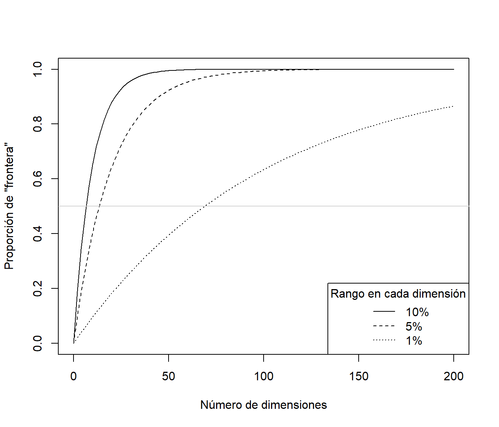

1.4 La maldición de la dimensionalidad
Podríamos pensar que al aumentar el número de variables explicativas se mejora la capacidad predictiva de los modelos. Lo cual, en general, sería cierto si realmente los predictores fuesen de utilidad para explicar la respuesta. Sin embargo, al aumentar el número de dimensiones se pueden agravar notablemente muchos de los problemas que ya pueden aparecer en dimensiones menores, esto es lo que se conoce como la maldición de la dimensionalidad (curse of dimensionality, Bellman, 1961).
Uno de estos problemas es el denominado efecto frontera que ya puede aparecer en una dimensión, especialmente al trabajar con modelos flexibles (como ajustes polinómicos con grados altos o los métodos locales que trataremos en el Capítulo 6). La idea es que en la “frontera” del rango de valores de una variable explicativa vamos a disponer de pocos datos y los errores de predicción van a tener gran variabilidad (se están haciendo extrapolaciones de los datos, más que interpolaciones, y van a ser menos fiables).
Como ejemplo consideraremos un problema de regresión simple, con un conjunto de datos simulados (del proceso ya considerado en la Sección 1.3.1) con 100 observaciones (que ya podríamos considerar que no es muy pequeño).
# Simulación datos
n <- 100
x <- seq(0, 1, length = n)
mu <- 2 + 4*(5*x - 1)*(4*x - 2)*(x - 0.8)^2 # grado 4
sd <- 0.5
set.seed(1)
y <- mu + rnorm(n, 0, sd)
datos <- data.frame(x = x, y = y)
plot(x, y)
lines(x, mu, lwd = 2, col = "lightgray")Figura 1.6: Muestra simulada y tendencia teórica.
Cuando el número de datos es más o menos grande podríamos pensar en predecir la respuesta a partir de lo que ocurre en las observaciones cercanas a la posición de predicción, esta es la idea de los métodos locales (Capítulo 6). Uno de los métodos de este tipo más conocidos es el de los k-vecinos más cercanos (k-nearest neighbors; KNN). Se trata de un método muy simple, pero que puede ser muy efectivo, que se basa en la idea de que localmente la media condicional (la predicción óptima) es constante. Concretamente, dados un entero \(k\) (hiperparámetro) y un conjunto de entrenamiento \(\mathcal{T}\), para obtener la predicción correspondiente a un vector de valores de las variables explicativas \(\mathbf{x}\), el método de regresión10 KNN promedia las obsevaciones en un vecindario \(\mathcal{N}_k(\mathbf{x}, \mathcal{T})\) formado por las \(k\) observaciones más cercanas a \(\mathbf{x}\): \[\hat{Y}(\mathbf{x}) = \hat{m}(\mathbf{x}) = \frac{1}{k} \sum_{i \in \mathcal{N}_k(\mathbf{x}, \mathcal{T})} Y_i\] (sería necesario definir una distancia, normalmente la distancia euclídea de los predictores estandarizados).
Este método está implementado en numerosos paquetes, por ejemplo en la función knnreg() del paquete caret:
library(caret)
# Ajuste de los modelos
fit1 <- knnreg(y ~ x, data = datos, k = 5) # 5 observaciones más cercanas (5% de los datos)
fit2 <- knnreg(y ~ x, data = datos, k = 10)
fit3 <- knnreg(y ~ x, data = datos, k = 20)
plot(x, y)
lines(x, mu, lwd = 2, col = "lightgray")
newdata <- data.frame(x = x)
lines(x, predict(fit1, newdata), lwd = 2, lty = 3)
lines(x, predict(fit2, newdata), lwd = 2, lty = 2)
lines(x, predict(fit3, newdata), lwd = 2)
legend("topright", legend = c("Verdadero", "5-NN", "10-NN", "20-NN"),
lty = c(1, 3, 2, 1), lwd = 2, col = c("lightgray", 1, 1, 1))Figura 1.7: Predicciones con el método KNN y distintos vecindarios
A medida que aumenta \(k\) disminuye la complejidad del modelo y se observa un incremento del efecto frontera. Habría que seleccionar un valor óptimo de \(k\) (buscando un equilibro entre sesgo y varianza, como se mostró en la Sección 1.3.1 y se ilustrará en la última sección de este capítulo empleando este método con el paquete caret), que dependerá de la tendencia teórica y del número de datos. En este caso, para \(k=5\), podríamos pensar que el efecto frontera aparece en el 10% más externo del rango de la variable explicativa (con un número mayor de datos podría bajar al 1%). Al aumentar el número de variables explicativas, considerando que el 10% más externo del rango de cada una de ellas constituye la “frontera” de los datos, tendríamos que la proporción de frontera sería \(1-0.9^d\), siendo \(d\) el número de dimensiones. Lo que se traduce que con \(d = 10\) el 65% del espacio predictivo sería frontera y en torno al 88% para \(d=20\), es decir, al aumentar el número de dimensiones el problema del efecto frontera será generalizado.
curve(1 - 0.9^x, 0, 200, ylab = 'Proporción de "frontera"', xlab = 'Número de dimensiones')
curve(1 - 0.95^x, lty = 2, add = TRUE)
curve(1 - 0.99^x, lty = 3, add = TRUE)
abline(h = 0.5, col = "lightgray")
legend("bottomright", title = "Rango en cada dimensión", legend = c("10%" , "5%", "1%"),
lty = c(1, 2, 3))
Desde otro punto de vista, suponiendo que los predictores se distribuyen de forma uniforme, la densidad de las observaciones es proporcional a \(n^{1/d}\), siendo \(n\) el tamaño muestral. Por lo que si consideramos que una muestra de tamaño \(n=100\) es suficientemente densa en una dimensión, para obtener la misma densidad muestral en 10 dimensiones tendríamos que disponer de un tamaño muestral de \(n = 100^{10} = 10^{20}\). Por tanto, cuando el número de dimensiones es grande no va a haber muchas observaciones en el entorno de la posición de predicción y puede haber serios problemas de sobreajuste si se pretende emplear un modelo demasiado flexible (por ejemplo KNN con \(k\) pequeño). Hay que tener en cuenta que, en general, fijado el tamaño muestral, la flexibilidad de los modelos aumenta al aumentar el número de dimensiones del espacio predictivo.
Para concluir, otro de los problemas que se agravan notablemente al aumentar el número de dimensiones es el de colinealidad (o concurvidad) que puede producir que muchos métodos (como los modelos lineales o las redes neuronales) sean muy poco eficientes o inestables (llegando incluso a que no se puedan aplicar), además de que complica notablemente la interpretación de cualquier método. Esto está relacionado también con la dificultad para determinar que variables son de interés para predecir la respuesta (i.e. no son ruido). Debido a la aleatoriedad, predictores que realmente no están relacionados con la respuesta pueden ser tenidos en cuenta por el modelo con mayor facilidad (KNN con las opciones habituales tiene en cuenta todos los predictores con el mismo peso). Lo que resulta claro es que si se agrega ruido se producirá un incremento en el error de predicción. Incluso si las variables añadidas resultan de interés, si el número de observaciones es pequeño en comparación, el incremento en la variabilidad de las predicciones puede no compensar la disminución del sesgo de predicción.
Como conclusión, en el caso multidimensional habrá que tratar de emplear métodos que minimicen estos problemas.
En el caso de clasificación se considerarían las variables indicadoras de las categorías y se obtendrían las frecuencias relativas en el vecindario como estimaciones de las probabilidades de las clases.↩